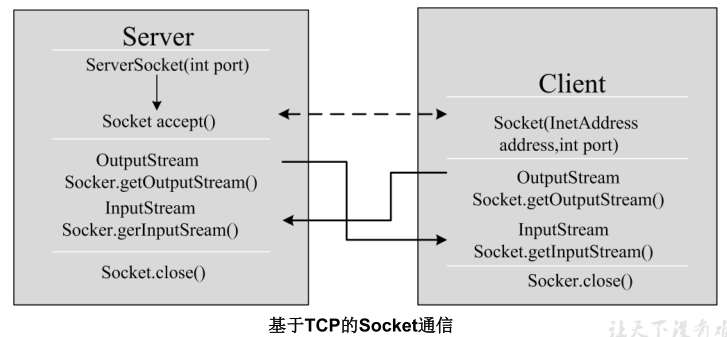

网络编程概述¶
1. 软件结构¶
C/S结构 ：全称为Client/Server结构，是指客户端和服务器结构。常见程序有ＱＱ、红蜘蛛、飞秋等软件。

B/S结构 ：全称为Browser/Server结构，是指浏览器和服务器结构。常见浏览器有IE、谷歌、火狐等。
两种架构各有优势，但是无论哪种架构，都离不开网络的支持。网络编程，就是在一定的协议下，实现两台计算机的通信的程序。
2. 网络通信协议¶
2.1 TCP/IP协议参考模型¶
- 网络通信协议：通过计算机网络可以使多台计算机实现连接，位于同一个网络中的计算机在进行连接和通信时需要遵守一定的规则，这就好比在道路中行驶的汽车一定要遵守交通规则一样。在计算机网络中，这些连接和通信的规则被称为网络通信协议，它对数据的传输格式、传输速率、传输步骤等做了统一规定，通信双方必须同时遵守才能完成数据交换。
- TCP/IP协议： 传输控制协议/因特网互联协议( Transmission Control Protocol/Internet Protocol)，是Internet最基本、最广泛的协议。它定义了计算机如何连入因特网，以及数据如何在它们之间传输的标准。它的内部包含一系列的用于处理数据通信的协议，并采用了4层的分层模型，每一层都呼叫它的下一层所提供的协议来完成自己的需求。

上图中，OSI参考模型：模型过于理想化，未能在因特网上进行广泛推广。 TCP/IP参考模型(或TCP/IP协议)：事实上的国际标准。
- TCP/IP协议中的四层分别是应用层、传输层、网络层和链路层，每层分别负责不同的通信功能。
- 链路层：链路层是用于定义物理传输通道，通常是对某些网络连接设备的驱动协议，例如针对光纤、网线提供的驱动。
- 网络层：网络层是整个TCP/IP协议的核心，它主要用于将传输的数据进行分组，将分组数据发送到目标计算机或者网络。而IP协议是一种非常重要的协议。IP（internet protocal）又称为互联网协议。IP的责任就是把数据从源传送到目的地。它在源地址和目的地址之间传送一种称之为数据包的东西，它还提供对数据大小的重新组装功能，以适应不同网络对包大小的要求。
- 传输层：主要使网络程序进行通信，在进行网络通信时，可以采用TCP协议，也可以采用UDP协议。TCP（Transmission Control Protocol）协议，即传输控制协议，是一种面向连接的、可靠的、基于字节流的传输层通信协议。UDP(User Datagram Protocol，用户数据报协议)：是一个无连接的传输层协议、提供面向事务的简单不可靠的信息传送服务。
- 应用层：主要负责应用程序的协议，例如HTTP协议、FTP协议等。
而通常我们说的TCP/IP协议，其实是指TCP/IP协议族，因为该协议家族的两个最核心协议：TCP（传输控制协议）和IP（网际协议），为该家族中最早通过的标准，所以简称为TCP/IP协议。
2.2 TCP与UDP协议¶
通信的协议还是比较复杂的， java.net 包中包含的类和接口，它们提供低层次的通信细节。我们可以直接使用这些类和接口，来专注于网络程序开发，而不用考虑通信的细节。
java.net 包中提供了两种常见的网络协议的支持：
2.2.1 UDP协议¶
UDP：用户数据报协议(User Datagram Protocol)
-
非面向连的，不可靠的：UDP是无连接通信协议，即在数据传输时，数据的发送端和接收端不建立逻辑连接。简单来说，当一台计算机向另外一台计算机发送数据时，发送端不会确认接收端是否存在，就会发出数据，同样接收端在收到数据时，也不会向发送端反馈是否收到数据。
-
由于使用UDP协议消耗资源小，通信效率高，所以通常都会用于音频、视频和普通数据的传输例如视频会议都使用UDP协议，因为这种情况即使偶尔丢失一两个数据包，也不会对接收结果产生太大影响。
但是在使用UDP协议传送数据时，由于UDP的面向无连接性，不能保证数据的完整性，因此在传输重要数据时不建议使用UDP协议。大小限制的：数据被限制在64kb以内，超出这个范围就不能发送了。
-
数据报(Datagram)：网络传输的基本单位
2.2.2 TCP协议¶
TCP：传输控制协议 (Transmission Control Protocol)
- 面向连接的，可靠的：TCP协议是面向连接的通信协议，即传输数据之前，在发送端和接收端建立逻辑连接，然后再传输数据，它提供了两台计算机之间可靠无差错的数据传输。是一种面向连接的、可靠的、基于字节流的传输层的通信协议，可以连续传输大量的数据。类似于打电话的效果。
- 这是因为它为当一台计算机需要与另一台远程计算机连接时，TCP协议会采用“三次握手”方式让它们建立一个连接，用于发送和接收数据的虚拟链路。数据传输完毕TCP协议会采用“四次挥手”方式断开连接。
- TCP协议负责收集这些信息包，并将其按适当的次序放好传送，在接收端收到后再将其正确的还原。TCP协议保证了数据包在传送中准确无误。TCP协议使用重发机制，当一个通信实体发送一个消息给另一个通信实体后，需要收到另一个通信实体确认信息，如果没有收到另一个通信实体确认信息，则会再次重复刚才发送的消息。
2.2.3 三次握手¶
TCP协议中，在发送数据的准备阶段，客户端与服务器之间的三次交互，以保证连接的可靠。
- 第一次握手，客户端向服务器端发出连接请求，等待服务器确认。
- 第二次握手，服务器端向客户端回送一个响应，通知客户端收到了连接请求。
- 第三次握手，客户端再次向服务器端发送确认信息，确认连接。
完成三次握手，连接建立后，客户端和服务器就可以开始进行数据传输了。由于这种面向连接的特性，TCP协议可以保证传输数据的安全，所以应用十分广泛，例如下载文件、浏览网页等。
2.2.4 四次挥手¶
TCP协议中，在发送数据结束后，释放连接时需要经过四次挥手。
- 第一次挥手：客户端向服务器端提出结束连接，让服务器做最后的准备工作。此时，客户端处于半关闭状态，即表示不再向服务器发送数据了，但是还可以接受数据。
- 第二次挥手：服务器接收到客户端释放连接的请求后，会将最后的数据发给客户端。并告知上层的应用进程不再接收数据。
- 第三次挥手：服务器发送完数据后，会给客户端发送一个释放连接的报文。那么客户端接收后就知道可以正式释放连接了。
- 第四次挥手：客户端接收到服务器最后的释放连接报文后，要回复一个彻底断开的报文。这样服务器收到后才会彻底释放连接。这里客户端，发送完最后的报文后，会等待2MSL，因为有可能服务器没有收到最后的报文，那么服务器迟迟没收到，就会再次给客户端发送释放连接的报文，此时客户端在等待时间范围内接收到，会重新发送最后的报文，并重新计时。如果等待2MSL后，没有收到，那么彻底断开。

3. 网络编程三要素¶
网络编程三要素分别是：协议、IP地址与端口号
3.1 协议¶
计算机网络通信必须遵守的规则，已经介绍过了，不再赘述。
3.2 IP地址¶
IP地址：指互联网协议地址（Internet Protocol Address），俗称IP。IP地址用来给一个网络中的计算机设备做唯一的编号。假如我们把“个人电脑”比作“一台电话”的话，那么“IP地址”就相当于“电话号码”
3.2.1 IP地址分类方式一¶
- IPv4：是一个32位的二进制数，通常被分为4个字节，表示成 a.b.c.d 的形式，例如192.168.65.100 。其中a、b、c、d都是0~255之间的十进制整数，那么最多可以表示42亿个。
- IPv6：由于互联网的蓬勃发展，IP地址的需求量愈来愈大，但是网络地址资源有限，使得IP的分配 越发紧张。为了扩大地址空间，拟通过IPv6重新定义地址空间，采用128位地址长度，每16个字节一组，分成8组十六进制数，表示成 ABCD:EF01:2345:6789:ABCD:EF01:2345:6789 ，号称可以为全世界的每一粒沙子编上一个网址，这样就解决了网络地址资源数量不够的问题。
3.2.2 IP地址分类方式二¶
公网地址( 万维网使用)和 私有地址( 局域网使用)。192.168.开头的就是私有址址，范围即为192.168.0.0--192.168.255.255，专门为组织机构内部使用
3.2.3 常用命令¶
查看本机IP地址： ipconfig
检查网络是否连通：ping 空格 IP地址
- 特殊的IP地址： 本地回环地址(hostAddress)： 127.0.0.1
- 主机名(hostName)： localhost
3.3 域名¶
因为IP地址数字不便于记忆，因此出现了域名，域名容易记忆，当在连接网络时输入一个主机的域名后，域名服务器(DNS)负责将域名转化成IP地址，这样才能和主机建立连接。 ------- 域名解析
3.4 端口号¶
如果说IP地址可以唯一标识网络中的设备，那么端口号就可以唯一标识设备中的进程（应用程序）了。
- 端口号：用两个字节表示的整数，它的取值范围是0~65535。 公认端口：0~1023。被预先定义的服务通信占用，如：HTTP（80），FTP（21），Telnet（23）
- 注册端口：1024~49151。分配给用户进程或应用程序。如：Tomcat（8080），MySQL（3306），Oracle（1521）。
- 动态/ 私有端口：49152~65535。
如果端口号被另外一个服务或应用所占用，会导致当前程序启动失败。
利用 协议 + IP地址 + 端口号 三元组合，就可以标识网络中的进程了，那么进程间的通信就可以利用这个标识与其它进程进行交互。
4. 网络编程的相关类简介¶
4.1 InetAddress类¶
InetAddress类主要表示IP地址，两个子类：Inet4Address、Inet6Address。
Internet上的主机有两种方式表示地址：
- 域名(hostName)：www.atguigu.com
- IP 地址(hostAddress)：202.108.35.210
lInetAddress 类没有提供公共的构造器，而是提供 了 如下几个 **静态方法**来获取InetAddress 实例
| 静态方法名称 | 方法描述 |
|---|---|
| public static InetAddress getLocalHost() | 获取本机地址 |
| public static InetAddress getByName(String host) | 通过域名获取一个InetAddress对象 |
| public static InetAddress[] getAllByName(String host) | 通过域名获取InetAddress对象数组 |
| public static InetAddress getByAddress(byte[] addr) | 通过地址返回InetAddress对象数组 |
InetAddress 提供了如下几个常用的方法
| 静态方法名称 | 方法描述 |
|---|---|
| public String getHostAddress() | 返回 IP 地址字符串（以文本表现形式）。 |
| public String getHostName() | 获取此 IP 地址的主机名 |
4.2 Socket类¶
通信的两端都要有Socket（也可以叫“套接字”），是两台机器间通信的端点。网络通信其实就是Socket间的通信。Socket可以分为：
4.2.1 流套接字（stream socket）：使用TCP提供可依赖的字节流服务¶
- ServerSocket：此类实现TCP服务器套接字。服务器套接字等待请求通过网络传入。
- Socket：此类实现客户端套接字（也可以就叫“套接字”）。套接字是两台机器间通信的端点。
4.2.2 数据报套接字（datagram socket）：使用UDP提供“尽力而为”的数据报服务¶
- DatagramSocket：此类表示用来发送和接收UDP数据报包的套接字。

4.2.3 相关API¶
ServerSocket类的构造方法
| 构造方法 | 方法说明 |
|---|---|
| ServerSocket(int port) | 创建绑定到特定端口的服务器套接字 |
ServerSocket类的常用方法
| 常用方法 | 方法说明 |
|---|---|
| Socket accept() | 侦听并接受到此套接字的连接。 |
Socket类的常用构造方法
| 常用方法 | 方法说明 |
|---|---|
| public Socket(InetAddress address,int port) | 创建一个流套接字并将其连接到指定 IP 地址的指定端口号。 |
| public Socket(String host,int port) | 创建一个流套接字并将其连接到指定主机上的指定端口号。 |
Socket类的常用方法
| 常用方法 | 方法说明 |
|---|---|
| public InputStream getInputStream() | 返回此套接字的输入流，可以用于接收消息 |
| public OutputStream getOutputStream() | 返回此套接字的输出流，可以用于发送消息 |
| public InetAddress getInetAddress() | 此套接字连接到的远程 IP 地址；如果套接字是未连接的，则返回 null。 |
| public InetAddress getLocalAddress() | 获取套接字绑定的本地地址。 |
| public int getPort() | 此套接字连接到的远程端口号；如果尚未连接套接字，则返回 0。 |
| public int getLocalPort() | 返回此套接字绑定到的本地端口。如果尚未绑定套接字，则返回 -1。 |
| public void close() | 关闭此套接字。套接字被关闭后，便不可在以后的网络连接中使用（即无法重新连接或重新绑定）。需要创建新的套接字对象。 关闭此套接字也将会关闭该套接字的InputStream 和 OutputStream。 |
| public void shutdownInput() | 如果在套接字上调用 shutdownInput() 后从套接字输入流读取内容，则流将返回 EOF（文件结束符）。 即不能在从此套接字的输入流中接收任何数据。 |
| public void shutdownOutput() | 禁用此套接字的输出流。对于 TCP 套接字，任何以前写入的数据都将被发送，并且后跟 TCP 的正常连接终止序列。 如果在套接字上调用 shutdownOutput() 后写入套接字输出流，则该流将抛出 IOException。 即不能通过此套接字的输出流发送任何数据。 |
注意：先后调用Socket的shutdownInput()和shutdownOutput()方法，仅仅关闭了输入流和输出流，并不等于调用Socket的close()方法。在通信结束后，仍然要调用Scoket的close()方法，因为只有该方法才会释放Socket占用的资源，比如占用的本地端口号等。
4.2.4 DatagramSocket 类¶
基于UDP协议的网络编程仍然需要在通信实例的两端各建立一个Socket，但这两个Socket之间并没有虚拟链路，这两个Socket只是发送、接收数据报的对象，Java提供了DatagramSocket对象作为基于UDP协议的Socket，使用DatagramPacket代表DatagramSocket发送、接收的数据报。
DatagramSocket 类的常用方法
| 常用方法 | 方法说明 |
|---|---|
| public DatagramSocket(int port) | 创建数据报套接字并将其绑定到本地主机上的指定端口。套接字将被绑定到通配符地址，IP 地址由内核来选择。 |
| public DatagramSocket(int port,InetAddress laddr) | 创建数据报套接字，将其绑定到指定的本地地址。本地端口必须在 0 到 65535 之间（包括两者）。如果 IP 地址为 0.0.0.0，套接字将被绑定到通配符地址，IP 地址由内核选择。 |
| public void close() | 关闭此数据报套接字。 |
| public void send(DatagramPacket p) | 从此套接字发送数据报包。DatagramPacket 包含的信息指示：将要发送的数据、其长度、远程主机的 IP 地址和远程主机的端口号。 |
| public void receive(DatagramPacket p) | 从此套接字接收数据报包。当此方法返回时，DatagramPacket 的缓冲区填充了接收的数据。数据报包也包含发送方的 IP 地址和发送方机器上的端口号。 此方法在接收到数据报前一直阻塞。数据报包对象的 length 字段包含所接收信息的长度。如果信息比包的长度长，该信息将被截短。 |
DatagramPacket类的常用方法
| 常用方法 | 方法说明 |
|---|---|
| public DatagramPacket(byte[] buf,int length) | 构造 DatagramPacket，用来接收长度为 length 的数据包。 length 参数必须小于等于 buf.length。 |
| public DatagramPacket(byte[] buf,int length,InetAddress address,int port) | 构造数据报包，用来将长度为 length 的包发送到指定主机上的指定端口号。length 参数必须小于等于 buf.length。 |
| public int getLength() | 返回将要发送或接收到的数据的长度。 |
5. TCP与UDP网络编程¶
Java早期提供的API支持TCP 与 UDP网络编程
5.1 TCP网络编程¶
5.1.1 通信模型¶
Java语言的基于套接字TCP编程分为服务端编程和客户端编程，其通信模型如图所示：

5.1.2 说明（开发步骤）¶
服务器端
服务器 程序的工作过程包含以下四个基本的 步骤：
- 调用 ServerSocket(int port) ：创建一个服务器端套接字，并绑定到指定端口上。用于监听客户端的请求。
- 调用 accept() ：监听连接请求，如果客户端请求连接，则接受连接，返回通信套接字对象。
- 调用 该Socket 类对象的 getOutputStream() 和 getInputStream () ：获取输出流和输入流，开始网络数据的发送和接收。
- 关闭Socket 对象：客户端访问结束，关闭通信套接字。
客户端
客户端Socket 的工作过程包含以下四个基本的步骤 ：
- 创建 Socket ：根据指定服务端的 IP 地址或端口号构造 Socket 类对象。若服务器端响应，则建立客户端到服务器的通信线路。若连接失败，会出现异常。
- 打开连接到 Socket 的输入/ 出流： 使用 getInputStream()方法获得输入流，使用
- getOutputStream()方法获得输出流，进行数据传输
- 按照一定的协议对 Socket 进行读/ 写操作：通过输入流读取服务器放入线路的信息（但不能读取自己放入线路的信息），通过输出流将信息写入线路。
- 关闭 Socket ：断开客户端到服务器的连接，释放线路
5.1.3 代码示例¶
示例1：单个客户端与服务器通信
需求：客户端连接服务器，连接成功后给服务发送“lalala”，服务器收到消息后，给客户端返回“欢迎登录”，客户端接收消息后，断开连接
// 服务端
@Test
public void testServer() throws IOException {
//1、准备一个ServerSocket对象，并绑定8888端口
ServerSocket server = new ServerSocket(9898);
System.out.println("等待连接....");
//2、在8888端口监听客户端的连接，该方法是个阻塞的方法，如果没有客户端连接，将一直等待
Socket socket = server.accept();
System.out.println("一个客户端连接成功！！");
//3、获取输入流，用来接收该客户端发送给服务器的数据
InputStream input = socket.getInputStream();
//接收数据
byte[] data = new byte[1024];
StringBuilder s = new StringBuilder();
int len;
while ((len = input.read(data)) != -1) {
s.append(new String(data, 0, len));
}
System.out.println("客户端发送的消息是：" + s);
//4、获取输出流，用来发送数据给该客户端
OutputStream out = socket.getOutputStream();
//发送数据
out.write("欢迎登录".getBytes());
out.flush();
//5、关闭socket，不再与该客户端通信
//socket关闭，意味着InputStream和OutputStream也关闭了
socket.close();
//6、如果不再接收任何客户端通信，可以关闭ServerSocket
server.close();
}
// 客户端
@Test
public void testClient() throws IOException, InterruptedException {
Socket socket = new Socket("localhost", 9898);
OutputStream outputStream = socket.getOutputStream();
int count = 0;
while (count <= 50) {
Thread.sleep(new Random().nextInt(200) + 50);
outputStream.write("java.net.SocketException: Connection reset\n".getBytes());
count++;
outputStream.flush();
}
socket.close();
}
示例2：文件上传
文件上传，要求先传文件名，然后再传文件本体
// 客户端，传文件
@Test
public void client() throws Exception {
// 192.168.19.40
while (true) {
File file = new File("E:\\图像\\页面资源\\404.jpg");
BufferedInputStream is = new BufferedInputStream(new FileInputStream(file));
Socket socket = new Socket("localhost", 8888);
// 获取网络的写出流
OutputStream socketOutputStream = socket.getOutputStream();
// 发送文件名称
DataOutputStream dataOutputStream = new DataOutputStream(socketOutputStream);
byte[] bytes = new byte[1024];
int len;
// 先发送名称
dataOutputStream.write((file.getName()).getBytes());
// 再发送文件本体
while ((len = is.read(bytes)) != -1) {
socketOutputStream.write(bytes, 0, len);
}
//关闭资源
socket.close();
// Thread.sleep(new Random().nextInt(50000));
System.out.println("休眠了1s");
break;
}
}
// 服务端，接收文件
@Test
public void server() throws Exception {
ServerSocket serverSocket = new ServerSocket(8888);
while (true) {
Socket accept = serverSocket.accept();
// 获取网络写入流
InputStream acceptInputStream = accept.getInputStream();
// 获取名称的流
DataInputStream nameInputStream = new DataInputStream(acceptInputStream);
int len = 0;
byte[] bytes = new byte[1024];
// 先获取名称
len = nameInputStream.read(bytes);
BufferedOutputStream outputStream =
new BufferedOutputStream(new FileOutputStream("F:\\" + new String(bytes, 0, len)));
// 获取文件本体
while ((len = acceptInputStream.read(bytes)) != -1) {
outputStream.write(bytes, 0, len);
}
// 关闭资源
outputStream.close();
acceptInputStream.close();
}
}
改进：多线程上传文件
// 客户端
@Test
public void client() throws Exception {
Socket socket = new Socket("localhost", 8888);
File file = new File("D:\\下载\\百度云下载\\java8.CHM");
BufferedInputStream is = new BufferedInputStream(new FileInputStream(file));
// 获取网络的写出流
OutputStream socketOutputStream = socket.getOutputStream();
byte[] bytes = new byte[1024];
int len;
System.out.println("发送文件中...");
// 发送文件本体
while ((len = is.read(bytes)) != -1) {
socketOutputStream.write(bytes, 0, len);
}
//关闭资源（这也会将Socket的资源关闭）
socketOutputStream.close();
System.out.println("文件发送完毕！");
}
// 服务端
@Test
public void server() throws Exception {
ServerSocket serverSocket = new ServerSocket(8888);
while (true) {
Socket accept = serverSocket.accept();
// 启动一个新线程以接收文件
new ReceiveFileThread(accept).start();
}
}
// 接收文件的内部类
class ReceiveFileThread extends Thread {
Socket socket = null;
public ReceiveFileThread(Socket socket) {
this.socket = socket;
}
@Override
public void run() {
InputStream acceptInputStream = null;
FileOutputStream fileOutputStream = null;
try {
// 获取网络写入流
acceptInputStream = socket.getInputStream();
int len = 0;
byte[] bytes = new byte[8];
long l = System.currentTimeMillis();
fileOutputStream = new FileOutputStream("F:\\" + l);
System.out.println(Thread.currentThread().getName() + " 已连接，接收文件中...");
// 获取文件本体
while ((len = acceptInputStream.read(bytes)) != -1) {
fileOutputStream.write(bytes, 0, len);
}
System.out.println(Thread.currentThread().getName() + " 线程文件接收完毕！");
} catch (Exception e) {
e.printStackTrace();
} finally {
// 关闭资源
try {
fileOutputStream.close();
acceptInputStream.close();
} catch (IOException e) {
e.printStackTrace();
}
}
}
}
循环发送消息
// 服务端，一次连接，接收客户端循环发送的数据
@Test
public void Server() throws IOException, InterruptedException {
System.out.println("服务器启动中。。。");
ServerSocket serverSocket = new ServerSocket(5782);
// 建立连接
Socket accept = serverSocket.accept();
// 从连接获取输入流
InputStream acceptInputStream = accept.getInputStream();
while (true) {
int len = 0;
byte[] bytes = new byte[1024];
while ((len = acceptInputStream.read(bytes)) != -1) {
System.out.println(new String(bytes, 0, len));
}
}
}
// 客户端，一次连接，从控制台输入，可以循环发送消息
public static void main(String[] args) throws IOException, InterruptedException {
Scanner sc = new Scanner(System.in);
// 初始化Socket，同时建立连接
Socket socket = new Socket("127.0.0.1", 5782);
// 从Socket连接获取输出流
OutputStream socketOutputStream = socket.getOutputStream();
// 循环输出消息
while (true) {
System.out.printf("请输入消息：");
String s = sc.nextLine();
if ("quit".equals(s)) {
socket.close();
break;
}
socketOutputStream.write(s.getBytes());
socketOutputStream.flush();
}
socketOutputStream.close();
}
注意：
如果服务器在循环体内建立连接，那么需要使连接在循环体内（一般为末尾处）关闭。这相当于每次通信建立一次连接，开销大。
如果服务端与客户端一次只建立一个连接，获取一次输入/输出通道，若要达到循环通信的效果，则需要在循环体外建立一次连接，获取一次输出/输入通道，且使输出通道在循环体末尾使用
flush()来刷新数据。
循环发送消息改进：双向循环发送（即时通讯）
// 服务器
public class Server {
public static void main(String[] args) throws IOException {
Scanner sc = new Scanner(System.in);
System.out.println("服务器启动中。。。");
ServerSocket serverSocket = new ServerSocket(5782);
// 建立连接
Socket accept = serverSocket.accept();
// 从连接获取输入流
InputStream acceptInputStream = accept.getInputStream();
// 从连接获取输入流
OutputStream acceptOutputStream = accept.getOutputStream();
// 启动两个线程，一个接收消息，一个输出消息
new InputStreamThread(acceptInputStream).start();
new OutputStreamThread(acceptOutputStream, sc).start();
// 模拟其他代码继续执行
while (true) {
// 执行其他代码ing...
}
}
}
// 客户端
public class Client {
public static void main(String[] args) throws IOException, InterruptedException {
Scanner sc = new Scanner(System.in);
System.out.println("客户端启动中。。。");
// 初始化Socket，同时建立连接
Socket socket = new Socket("127.0.0.1", 5782);
// 从Socket连接获取输出流
OutputStream socketOutputStream = socket.getOutputStream();
// 从连接获取输入流
InputStream socketInputStream = socket.getInputStream();
// 启动两个线程，一个接收消息，一个输出消息
new InputStreamThread(socketInputStream).start();
new OutputStreamThread(socketOutputStream, sc).start();
// 模拟其他代码继续执行
while (true) {
// 执行其他代码ing...
}
}
}
// 其他输入与输出线程类
class InputStreamThread extends Thread {
InputStream inputStream = null;
public InputStreamThread(InputStream inputStream) {
this.inputStream = inputStream;
}
@Override
public void run() {
try {
while (true) {
// 循环接收消息
int len = 0;
byte[] bytes = new byte[1024];
while ((len = inputStream.read(bytes)) != -1) {
System.out.println(new String(bytes, 0, len));
}
}
} catch (Exception e) {
e.printStackTrace();
}
}
}
class OutputStreamThread extends Thread {
OutputStream outputStream = null;
Scanner sc;
public OutputStreamThread(OutputStream outputStream) {
this.outputStream = outputStream;
}
public OutputStreamThread(OutputStream outputStream, Scanner sc) {
this.outputStream = outputStream;
this.sc = sc;
}
@Override
public void run() {
try {
while (true) {
// 循环输出消息
String s = sc.nextLine();
outputStream.write(s.getBytes());
outputStream.flush();
}
} catch (Exception e) {
e.printStackTrace();
}
}
}
结果：绿色代表自己的输入
5.2 UDP网络编程¶
UDP(User Datagram Protocol，用户数据报协议)：是一个无连接的传输层协议、提供面向事务的简单、不可靠的信息传送服务，类似于短信。由数据包传毒消息。
UDP协议是一种面向非连接的协议，面向非连接指的是在正式通信前不必与对方先建立连接，不管对方 状态就直接发送，至于对方是否可以接收到这些数据内容，UDP协议无法控制。
UDP的优点：
- 速度快
- 不会返回错误消息
UDP的特点：
UDP协议是面向数据报文的信息传送服务。UDP在发送端没有缓冲区，对于应用层交付下来的报文在添加了首部之后就直接交付于ip层，不会进行合并，也不会进行拆分，而是一次交付一个完整的报文。比如我们要发送100个字节的报文，我们调用一次send()方法就会发送100字节，接收方也需要用receive()方法一次性接收100字节，不能使用循环每次获取10个字节，获取十次这样的做法。
UDP协议没有拥塞控制，所以当网络出现的拥塞不会导致主机发送数据的速率降低。虽然UDP的接收端有缓冲区，但是这个缓冲区只负责接收，并不会保证UDP报文的到达顺序是否和发送的顺序一致。因为网络传输的时候，由于网络拥塞的存在是很大的可能导致先发的报文比后发的报文晚到达。如果此时缓冲区满了，后面到达的报
文将直接被丢弃。这个对实时应用来说很重要，比如：视频通话、直播等应用。 因此UDP适用于一次只传送少量数据、对可靠性要求不高的应用环境，数据报大小限制在64K以下。
5.2.1 代码演示¶
// 客户端 发送端
@Test
public void UDPclient() throws IOException {
DatagramSocket ds = new DatagramSocket();
// 要发送的资源
byte[] bytes = "java.net.SocketException: Connection reset\n".getBytes();
InetSocketAddress address = new InetSocketAddress("localhost", 9999);
// 打包数据
DatagramPacket packet = new DatagramPacket(bytes, bytes.length, address);
int count = 0;
//发送包裹
while (true) {
ds.send(packet);
count++;
}
}
// 服务器，接收端
@Test
public void UDPServer() throws IOException {
// 创建报文接收的socket
DatagramSocket datagramSocket = new DatagramSocket(9999);
// 设置报文一次接收的大小
byte[] bytes = new byte[1024];
DatagramPacket datagramPacket = new DatagramPacket(bytes, bytes.length);
// 循环接收UDP包
while (true) {
datagramSocket.receive(datagramPacket);
byte[] data = datagramPacket.getData();
InetAddress address = datagramPacket.getAddress();
System.out.println("来自：" + address + "的消息：" + new String(data, 0, data.length));
}
}
本文总阅读量次